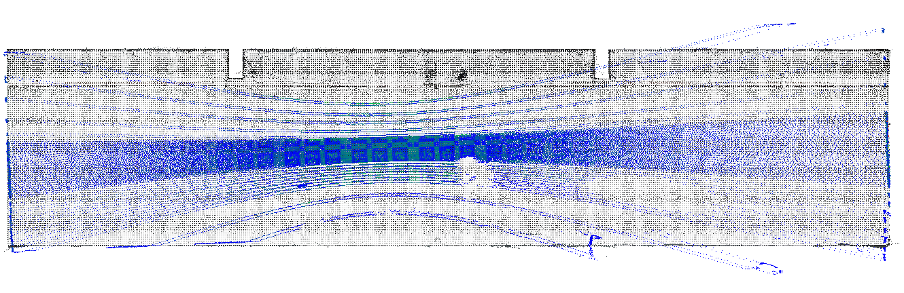
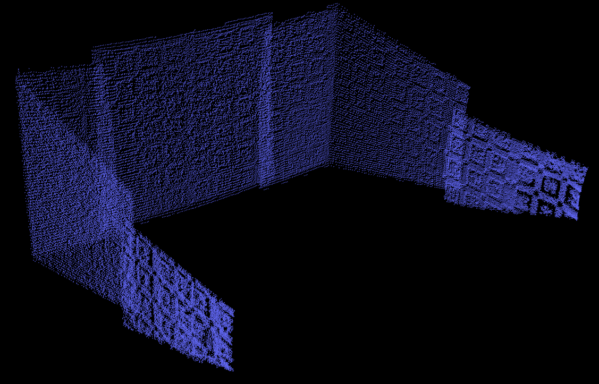

Sensor calibration parameter acceptance standard
1. Calculation data collection & calibration tool use requirements
1. Calculate the front item check
Confirm that the door is closed, the hood is closed, the trunk is turned off, the exterior mirror is expanded, the high beam is turned off, the wiper is turned off, and the tire pressure is normal
Block the roof glass to avoid interference caused by laser beam reflexes, affecting Main-Lidar (pandar_64) calibration
Dianyun's top and lower ends exceed the top and bottom of the calibration room
The point clouds hitting on the wall seriously affect the calibration accuracy


After starting the intermediate device, confirm that the vehicle dies to the middle and front wheel card (remarks: calibration has strict requirements on the positioning of the vehicle. The central device can achieve the driving process of the vehicle, and the location calibration after the vehicle's four -wheel stop of the vehicle is stopped..
Except for drivers and operators, avoid other personnel from getting on the car
2. Collect "two -frame calibration data" in the calibration room to calibrate
Frame 1 Data: At the door of the calibration, collect Front-Tele-Camera image, Main-Lidar and Front-Lidar
Frame 2 Data: On the middle device, collect the vehicle sensor data
|
Frame 1 |
|
|
|
|
Frame 2 |
|
|
 |


3. Collect the "Three -frame Verification Data" on an open road and conduct static inspection
The collection time interval of calibration data and verification data is as short as possible
Static
Avoid dynamic objects such as other vehicles and pedestrians around
The street light pole, traffic rod, signal light, transportation card, fence, power distribution box, building, static vehicles are rich (all must, try to be as much as possible)
The ground is flat, the parking line is rich in texture (only for the surrounding camera, the underground garage can be selected)
Except for drivers and operators, avoid other personnel from getting on the car
2. Camera & Lidar Acceptance Standard (excluding a surrounding camera)
1. Projection description
According to the optimal camera model (for example, select the FISHEYE model from the front -view wide -angle camera) to project the point cloud to the image, check the degree of matching
In order to quantify projection errors, increase the auxiliary grid with a resolution of 10pixel
In order to distinguish the prospects and the back -gallery objects, coloring according to "close, medium and long distance"

2. Key inspection items (if the overall deviation is large, it is directly calibrated and no longer check the details)
Image intermediate wire beam dense area: check the outline and road along the static vehicle, the power distribution box and the fence (the blind radar)
The upper side of the image on the top of the image: Check the left and right edges of the light pole, trunk, and traffic signs
The front -aid wide -angle camera is affected by the windshield distortion of the windshield. The edge of the image is large and the alignment deviations are large. You can check the judgment of the left and right sides (very state, the investigation direction is as follows)
If the edge of the front-to-line projection image is poor, the projection images on the left and right sides are better, the Main/Front Lidar calibration is accurate, and the Front-Wide-Camera internal reference is not allowed
If the front, left, and right projection images are poor, the mAIN/Front lidar calibration is not allowed to calibrate.
In front and sides Static vehicle , The outer contour is consistent with the point cloud distribution (> 100M is not strong)
CheckList (need to provide local screenshots)
The white light rod and the vehicle are high -counter -objects, which may cause unusual expansion, deformation, distortion, etc. If other frames are not wrong, it can be considered to be OK
M1 laser radar left and right sub -point cloud data quality problems are large, not in -depth (under the development of quality inspection tools)
There is a problem with a single POS, and other POS is normal, ignore
Local problem, normal as a whole, ignore
|
describe |
European distance |
color |
Circuit beam dense area projection requirements (95%can reach the standard) |
legend |
Line beam thin area projection requirements (90%can reach the standard) |
legend |
|
Close |
< 50m |
Yellow Orange and Red Gravity |
up down left right < 10pixel/1格 |
|
about < 10pixel/1格 |
|
|
Mid -range
|
50 - 100m |
Turf |
up down left right < 20pixel/2格 |
|
about < 20pixel/2格 |
|
|
Long distance |
> 100m |
Blue |
Dianyun contour covers the objects roughly |
|
Not check |
|
1、main-lidar (pandar_64) FOV = 360
forward:
Check Front_wide_camera
Check Front_LeFT_CAMERA and Front_right_camera
Check the area to look at the area
Back direction:
Check Rear_Camera
Check Rear_left_Camera and Rear_right_camera
Check the area to look at the area
|
front_left_camera |
front_wide_camera |
front_right_camera |
|
|
|
|
|
rear_left_camera |
rear_camera |
rear_right_camera |
|
|
|
|


2、front-idar (M1) FOV = 120
Check Front_wide_camera
Check Front_LeFT_CAMERA and Front_right_camera
Check the area to look at the area
|
front_left_camera |
front_wide_camera |
front_right_camera |
|
|
|
|

Special Instructions:
M1 Front-Lidar single-frame point cloud data is composed of five pieces of cloud.
The alignment deviation of the two pieces of the two pieces of the outer side during projection may be large, and it can be relaxed to twice the original standard appropriately.


3、blind-lidar
Check Front_wide_camera
Check Front_Left_Camera, Front_right_Camera, Rear_Left_Camera and Rear_Right_Camera
Check the area to look at the area
|
front_left_camera |
front_wide_camera |
front_right_camera |
|
|
|
|
|
rear_left_camera |
rear_right_camera |
|
|
|
|


3. View Camera Acceptance Standard
1. BEV puzzle between calibration
After the calibration is completed, the output 45 degrees and 90 degrees 2 stitching diagrams and hit a grid with a resolution of 10pixel. For 1000*1000 resolution stitching diagram
(1) Observe the pixel area of continuous characteristics at the seams
(2) The average error of stitching is required < 2pixel，且最大误差 <= 3pixel
(3) The above accuracy acceptance standards are also applicable to the underground garage BEV puzzle
(4) The location of the ground identification that needs to be added in the calibration of the ground is as follows
2. Underground garage BEV puzzle (if the calibration is not accepted, the calibration is directly calibrated, and the frame check will not be drawn)
Considering factors such as acceleration and deceleration during the normal driving of the vehicle and the time of the time of view of the camera, the alignment error of the splicing of the parking space segmentation line < 1/5 线宽（请换算成 pixel）
The linear should not be distorted to a curve (related to the acceleration of the vehicle and the internal reference of the camera): restricting both ends of the line of the line (please be converted to Pixel)
3. Verify data collection suggestion (not conditions for the time being)
There are non -rigorous co -coexistence on the middle device and the calibration of the ground, and the real vehicle is driving on the flat ground. There is an error in the vision camera through the calibration of the BEV puzzle of the calibration. It is recommended to construct the scene shown in the figure below:
Four, sensor installation
If you are not qualified, you need to adjust the sensor position and re -calibrate
|
sensor |
euler angle |
threshold （degree） |
|
main-lidar & front-lidar |
roll & pitch & yaw |
±1° |
|
front-wide-camera |
pitch |
±1° |